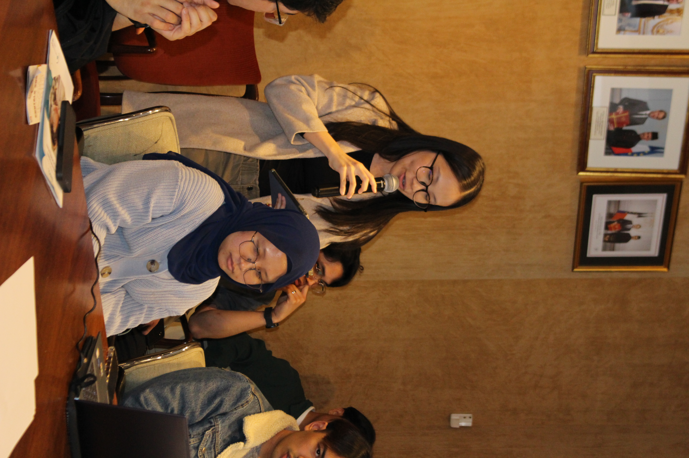
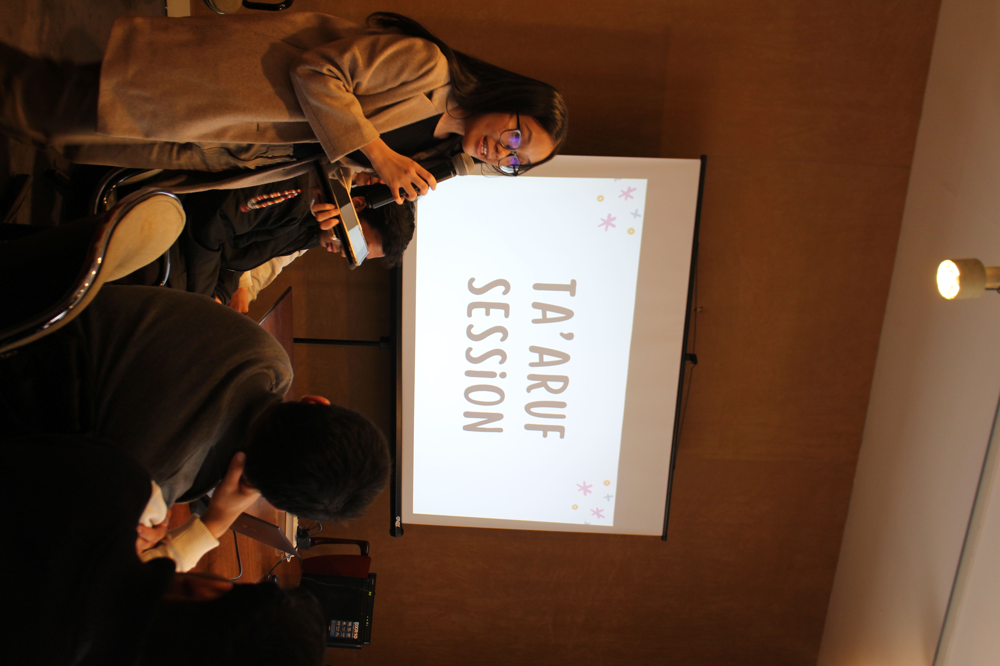
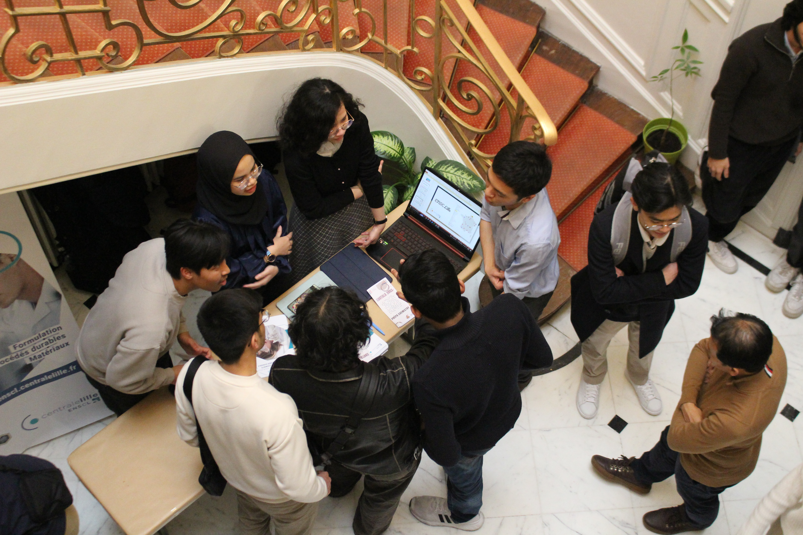

I volunteered for Edutalk, an annual event organised by the Malaysian Students' Association in France (MASAF) in 2023 and 2024. The event aims to inform Malaysian students in France about the different academic paths they can pursue. I contributed as the emcee and assisted with the overall organisation of the event.


